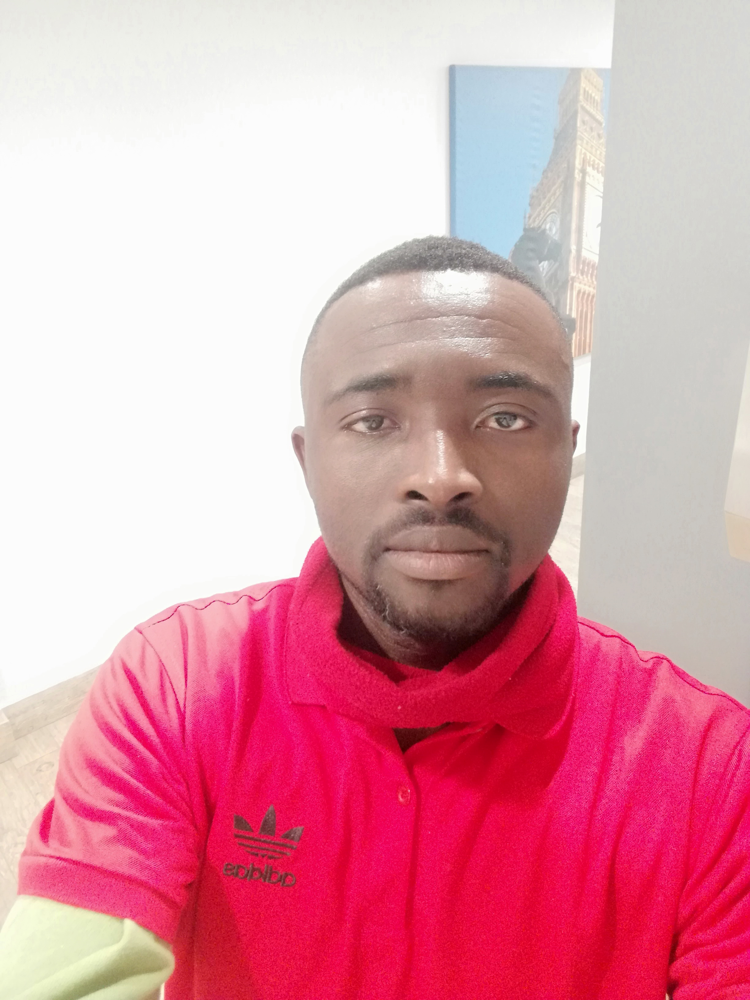

My Online CV
My Bio
I am NJI Peter Tamukong, a Cameroonian and a software engineering student at HyperionDev, I am a holder of Masters Degree in Marketing and Communication
I have been a marketing assistant in two Banks, and also a part time lecturer. Today my passion has shifted from marketing to the domain of software engineering. I enjoy coding and i aspire to provid software engineering solutions to companies in need
The urgent need and scarcity of software engineers in our modern society has encouraged me to chose Software engineering and my new carrier in life. Diagnosing services in need of sofware engineering solution in divers industries as well as companies accross the globe is what i like most
My Contact Details
Name: NJI Peter TAMUKONG
Home Address: 53 De Korte street Braamfontein
Contact Number: +27 67 962 5609
Email Address: njipeterong@gmail.com
LinkedIn: linkedin.com/in/nji-peter-tamukong-3b5b3a229
Skills and Competencies
Technical Skills and Qualifications
Created Programs in python
Created Programs in Java
Wrote Applications that interacted with Database
Other Skills
Marketing and Communication
Marketing Research
Teaching
Education History
- Currently Working Hard to Obtain a Diploma in Software Engineering
-
- HyperionDev Sept 2021--ongoing
-
- Gaining Extensive Traing in Python, Java, Database, HTML,CSS, Machin Learning to complete my software Engineering course
- Masters in Marketing and Communication
-
- Institute Universitaire de la Cote (IUC). Oct 2014 - Dec 2015
-
- Gained extensive training and successfully accomplished all courses for marketing and communication disciplin
- BA in Marketing Management
-
- Higher School of Economics and Social Science. Oct 2005 to Oct 2009
-
- Academic Excellence in Marketing Management
- Active Member of Marketing Club
Work Experience
- Marketing Assistant
-
- BGFIBank Cameroon: Aug 2016 - Dec 2016
-
- Promotion
- Market Reseach
- Customer Service
- Marketing Assistant
-
- Ecobank Cameroon: Jan 2012 - Sept 2014
-
- Promotion
- Media Monitoring
- Marketing Research
List of Projects Realized
My First Capstone Project of level 1
My Second Capstone Project of level 1
My Third Capstone Project of level 1
My First Capstone Project of level 2